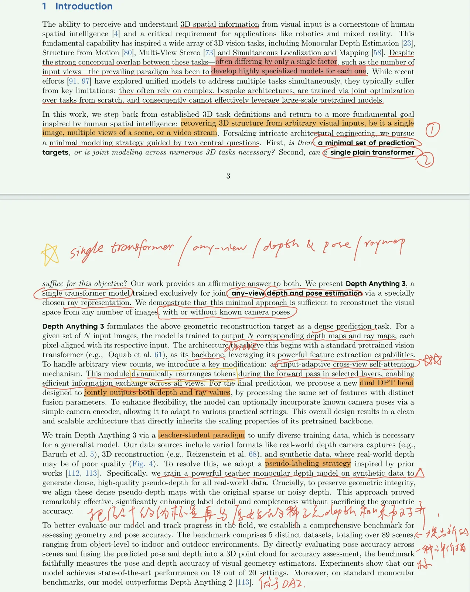
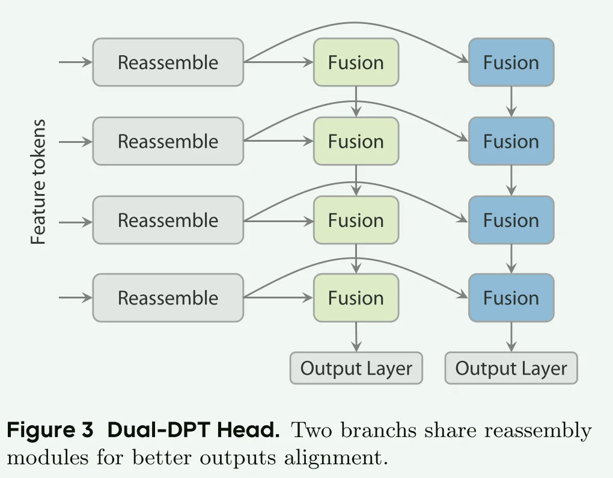
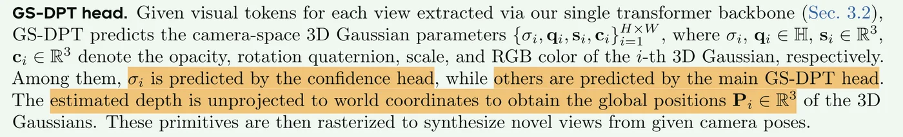
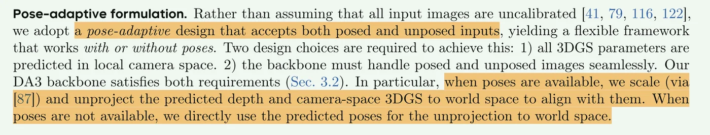
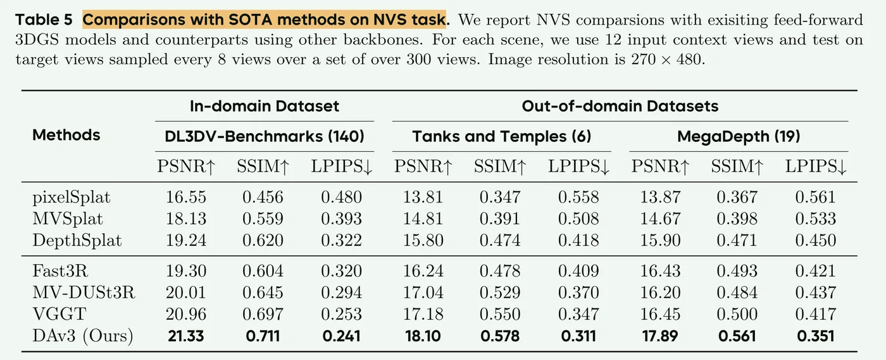
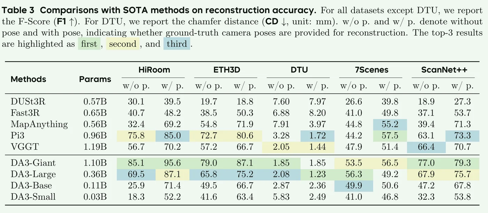
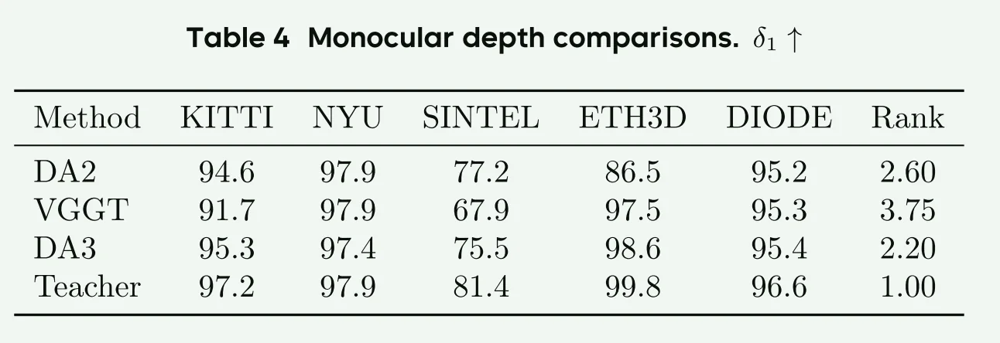

1. Pipeline
Given any number of images and optional camera poses, Depth Anything 3 reconstructs the visual space, producing ==consistent depth and ray maps==.
It significantly outperforms VGGT in multi-view geometry and pose accuracy; with monocular inputs, it also surpasses Depth Anything 2 while matching its detail and robustness.
2. Introduction
DA3：Minimal Modeling。只用一个 ViT 处理从单图到多图的所有情况，提出 Depth + Ray 是一组可重建的完备输出。

3. Method
3.1 Formulation
3.1.1. Depth-Ray Representation
把相机位姿通过 Ray map 表示。
一个六维向量 \(r = (t,d)\) 即可恢复三维坐标点 \(P = t + D(u,v) * d\) 。
- 其中，\(t\) 是相机射线的坐标，\(d\) 是相机射线的方向，均为三维向量。\(D(u,v)\) 是预测深度。
3.1.2. Deriving Camera Parameters from the Ray Map.
平移 \(t_c\)： 直接对所有像素预测的射线原点 \(t\) 取平均值。
旋转与内参 (\(R, K\))：借助单应性矩阵。
标准相机，射线方向是 \(d_I = p\) (像素坐标)； 目标相机，射线方向是 \(d_{cam} = K R d_I\) ； \(H = KR\) 最小化几何误差得到矩阵 \(H\)，QR分解得到K和R。
3.1.3. Minimal Prediction Targets
Depth + Ray \(\to\) 最小且充分
only pointmap \(\to\) 不足以保持一致；冗余预测 \(\to\) 引入矛盾，精度有损失。
3.2 Architecture
3.2.1. Single Transformer
DinoV2 的主架构，只是重排了 token ：把 Transformer 分成 self / global attention。前 \(L_s\) 层只提取单目特征，后 \(L_g\) 层进行全局特征融合，多视角推理。
优点：输入自适应。
3.2.2. Camera Encoder （可选）
有 pose的时候可以通过一个MLP把pose也加入到 patch token 里面，增加信息。如果没有的话就使用一个可学习的 pose token 加到 patch token，通过学习的方式参与attention。
3.2.3. Dual DPT Head

完全独立的两个DPT哪怕回传，学习到的也就是 token 级别的语义信息，但由于两个dpt会有自己的reassemble，那么得到的结果就是哪怕backbone知道它是椅子，但是两个head的特征图在像素上有几何错位，这就会导致后期投影的点云出现模糊。Reassemble_Depth 可能会学到把椅子的边缘放在像素 (100, 100) 的位置；而 Reassemble_Ray 可能会学到把同样的边缘放在 (101, 100) 的位置。
Dual-DPT 就是强制从同一个特征图里面恢复 depth + ray，强制二者对齐。（如果动态的话那更要共享了，不然更容易产生伪影和模糊）
3.3 Training
Teacher-Student learning paradigm.
合成数据 \(\to\) 教师 \(\to\) 预测真实数据的相对深度 \(\to\) RANSAC 得到真实尺度与相对深度之间的 s, t, \(D^{T \rightarrow M} = \hat{s} \tilde{D} + \hat{t}\) \(\to\) 训练真实数据。
\[\mathcal{L} = \mathcal{L}_D + \mathcal{L}_M + \mathcal{L}_P + \beta\mathcal{L}_C + \alpha\mathcal{L}_{grad}\]
128 H100 GPUs for 200k steps；
base resolution: 504 x 504（504能被2,3,4,6,9,14整除，能兼容常见照片长宽比（2:3, 3:4, 9:16），做 Patch 分割时不会出现无法整除的边缘情况）；
动态BS：保持每一步的总 Token 数量大致恒定；
4. Feed-Forward 3D Gaussian Splattings
只要几何（Depth + Pose）估准，NVS就基本拿下了。
- 做法：冻结backbone，改换 Dual-DPT 为 GS-DPT。
- 目标：把 Feature Tokens 转化成 GS 参数。
Pose-Conditioned Feed-Forward 3DGS

Pose-Adaptive Feed-Forward 3DGS
5. Experiments



6. Conclusion and Discussion
Extend its reasoning to dynamic scenes；Integrate language and interaction cues